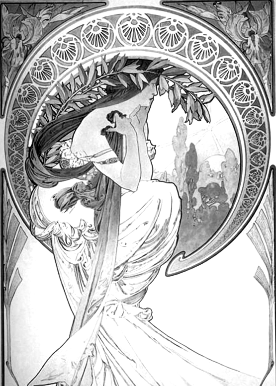
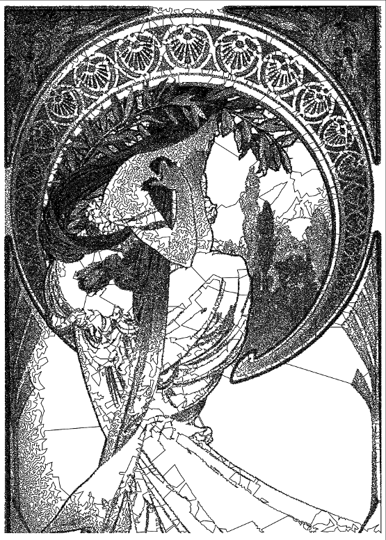
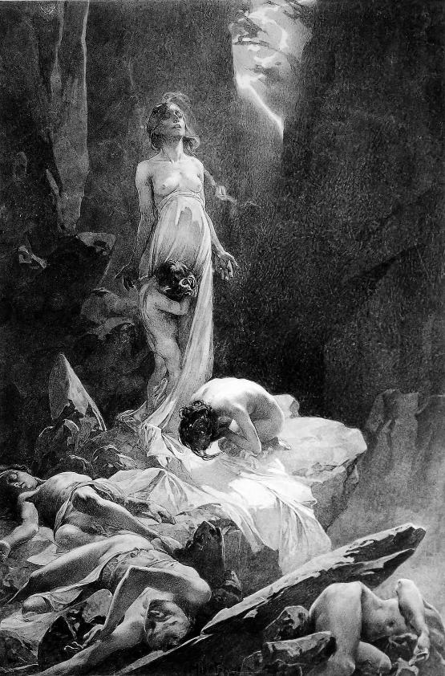
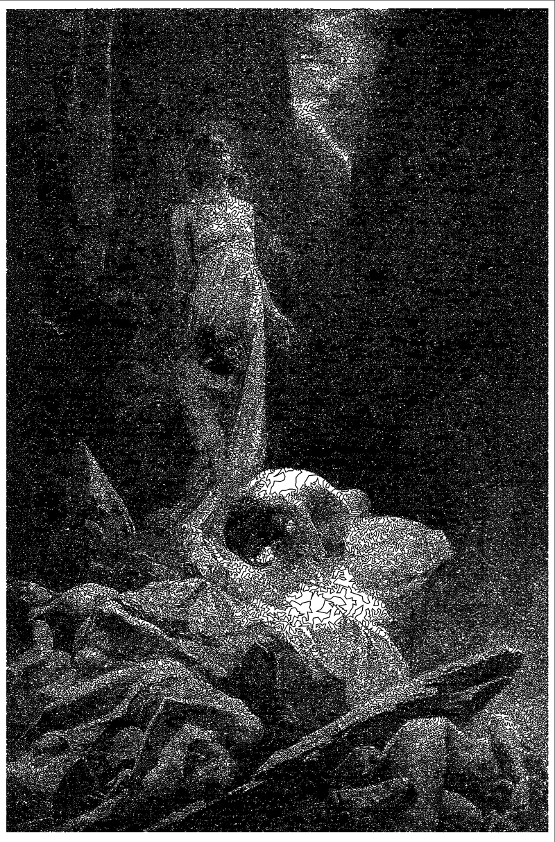

While working on an industrial optimisation problem involving very large scale instances of the Travelling Salesman Problem, I thought it would be an interesting expermient to generate a tour over a set of points obtained from image dithering. It turned out that this had been done before by Craig S. Kaplan and Robert Bosch, who produced excellent results using a combination of Voronoi Stippling and the Concorde TSP Solver. Nonetheless, having started the project; thought it would be fun to continue.
To generate a set of points from an image, I implemented the Floyd-Steinberg dithering algorithm using Lisp. Next, using these points, I applied the 2-Opt heuristic to produce a reasonable "two optimal" tour. For this step I implemented Jon Bentley's research on 2-Opt, with my own improvements in Java, and as an excersise, in Lisp.
Some results are shown below and a time-lapse video (25fps) showing the optimisation process to the left. I'm using 2 Mucha artworks as input here simply because I thought they would produce interesting results.
The first example was chosen for it's contrast, which the algorithm reproduces nicely on the right. The second example was chosen for it's shadow - I thought it may produce a Chiaroscuro like effect. However, the initial dithering results in very dense regions of points, which makes Floyd-Steinberg better suited to the higher contrast example in this case. Note that Bosch and Kaplan's results are superior to mine as they use Voronoi Stippling which results in a reduced and better distribution of points, which is good from both a visual and computational point of view.
Original: (Greyscale)
Result: 2-Optimal tour of 205,503 points.
Original: (Greyscale)
Result: 2-Optimal tour of 588,377 points.
{kind=link}
{kind=link}